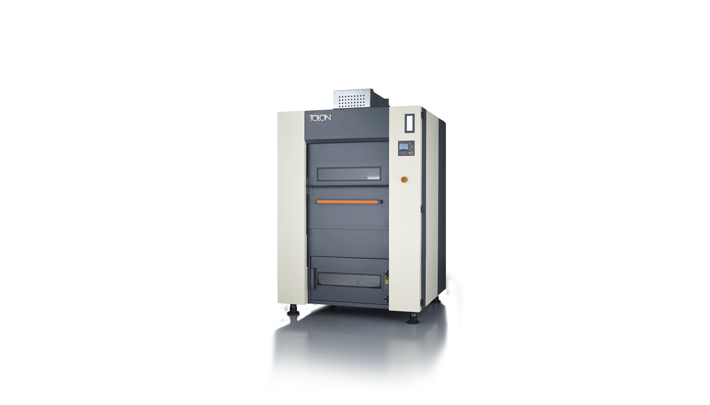

Kolay arayüz
Hızlı ve hatasız kullanım
Durum ışığı
Makinenin durumu
her yerden görülebilir

Geniş ağız
Yükleme-boşaltma kolaylığı
Kayar kapak
Araba yaklaşmasını engellemez

Geniş filtre kapağı
Kolay temizlik

Geniş filtre
Yüksek verim
Menteşeli kapaklar
Kolay bakım-onarım

Kompakt tasarım
Bakım için kolay erişim ve yer tasarrufu

Geniş hava çıkışı
Az direnç, yüksek verim

Dosya cebi
Kolaylaştırıcı detaylar
Inverter kontrolü
Enerji tasarrufu
Hızlı erişim kapağı
Kolay bakım

Tam izolasyon
Minimum ısı kaybı
Basınç sensörü
Verim kontrolü